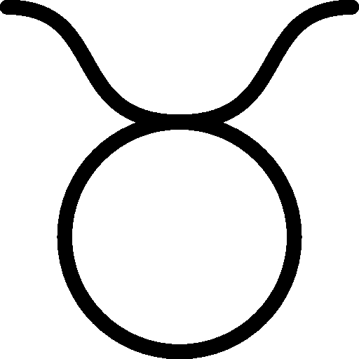

ASTROLOGY

TAURUS
People that are taurus are very practical. They always feel the need to be surrounded by love and beauty. They are very Stable and conservative making them one of the most reliable signs of the zodiac.
Taurus' find it easy to make money and stay on same plan for years until they are completed with it. This makes them good employees and hard workers and also great long-term friends and partners since they are devoted to work on making their relationships better in everyway possible. They are always there for the people they love. They are also overprotective and conservative at times. They are loyal and don't like sudden changes and criticism. And no matter their potential emotional challenge they always have the ability to bring a voice of reason in any chaotic and unhealthy situation.